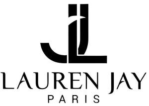

Trade Mark Journal No.2025/016 18 April 2025
UK00004184031 3 April 2025 (3,35)

- Class 3
- Soaps; Bath and shower gel; Perfumery essential oils, cosmetics, hair lotions; Skin moisturisers; Non-medicated skin care preparations; Non-medicated skin creams; Non medicated skin lotions; Skin care preparations; Face Oils; Face Serums; Anti-ageing Creams, Skin Tonics, Face Masks, Face scrubs and exfoliators; Skin balms (Non medicated-); Hand care products in the form of creams, gels and exfoliators, Foot care products in the form of creams, gels and exfoliators; Shampoos; Conditioners; Cosmetics; Skin cleansers; Facial cleansers; Hair moisturisers; Non-medicated moisturisers; Balms for cosmetic purposes; Creams for face and body care; Gels for face and body care; Lotions for face and body care; Foams for face and body care; Oils for face and body care; Balms for face and body care; Cosmetic kits; Lipstick; Lip gloss: Massage oils and gels (body care products); Make-up; Make-up removing preparations; Cosmetic preparations for baths; Fragrant preparations.
- Class 35
- Advertising; Business management; Trade fairs; Organisation, operation and supervision of loyalty and incentive schemes; Retail and wholesale services connected with the sale of pillows, mattresses, mattress protectors and bedding: Online retail services and mail order retail services connected with the sale of mattresses; Wholesale services connected with the sale of Soaps, Bath and shower gel, Perfumery essential oils, cosmetics, hair lotions, Skin moisturisers, Non-medicated skin care preparations, Non-medicated skin creams, Non medicated skin lotions, Face Oils, Face Serums, Anti-ageing Creams, Skin Tonics, Face Masks, Face scrubs and exfoliators, Hand care products in the form of creams, gels and exfoliators, Foot care products in the form of creams, Shampoos, Conditioners, Cosmetics, Creams for face and body care, Gels for face and body care, Lotions for face and body care, Foams for face and body care, Oils for face and body care, Balms for face and body care, Cosmetic kits, Lipstick, Lip gloss, Cosmetic preparations for baths, Fragrant preparations.
Lauren Sanchez Suarez
Mohammed Jahangir
Representative: The Trademark Helpline